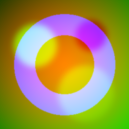

텍스처 페치 절감
AO·러프·메탈을 3장 따로 샘플하면 페치 3번. 한 장에 패킹하면 1번이면 됩니다. 셰이더 대역폭·명령이 줄어듭니다.
러프니스·메탈릭·AO 같은 흑백 데이터 여러 장을 한 텍스처의 R·G·B·A 채널에 몰아넣으면, 텍스처 페치와 메모리를 크게 아낄 수 있습니다. 이 문서는 어떤 데이터를 어느 채널에, 어떤 색공간으로, 어떤 압축과 함께 담을지를 엔진에 상관없이 통하는 기준으로 정리합니다.
| 패킹 이름 | R | G | B | A | 색공간 | 비고 |
|---|---|---|---|---|---|---|
| ORM (마스크맵) | AO | Rough | Metal | — | Linear | 널리 쓰는 관례(엔진마다 다름 · glTF 코어 사양은 아님) |
| glTF metallic-roughness | (AO) | Rough | Metal | — | Linear | G=Rough, B=Metal 고정. AO는 별도 텍스처가 원칙 |
| RMA 변형 | Rough | Metal | AO | — | Linear | 순서는 프로젝트마다 다름 — 문서화 필수 |
| 알베도+알파 | R G B 색상 | Opacity/Mask | RGB=sRGB · A=Linear | 컬러와 마스크는 색공간이 다름 | ||
| 노멀+데이터 | Nx | Ny | (Rough) | (Height) | Linear | BC5는 2채널뿐 — 3·4채널 패킹은 BC7/ASTC |
| 범용 마스크 | Mask1 | Mask2 | Mask3 | Mask4 | Linear | 블렌드/디졸브/이미시브 세기 등 |
AO·러프·메탈을 3장 따로 샘플하면 페치 3번. 한 장에 패킹하면 1번이면 됩니다. 셰이더 대역폭·명령이 줄어듭니다.
흑백 3장(각 1채널)을 따로 두면 채널이 낭비됩니다. 한 RGB 텍스처로 합치면 메모리·파일 수·바인딩 슬롯이 줄어듭니다.
“이 표면의 서피스 데이터”가 한 파일에 모여 버전·해상도·압축을 한 번에 맞추기 쉽습니다.
RGBA 텍스처는 채널 4개가 각각 독립된 흑백 이미지입니다.
한 채널에 흑백 데이터 한 장씩 넣고, 셰이더에서 tex.g, tex.b처럼 꺼내 씁니다.
아래는 전형적인 마스크맵(ORM) 배치 예시입니다.
아래는 서로 다른 흑백 데이터 맵 3장을 한 텍스처의 R/G/B에 넣은(ORM 패킹) 모습과,
그것을 다시 채널별로 분해한 것입니다. 합쳐서 컬러로 보면 “색”이 아니라 데이터라 이상해 보이지만,
셰이더는 tex.r·tex.g·tex.b로 각각 꺼내 씁니다.

channel-demo/generate.py
가장 흔한 PBR 서피스 패킹. 세 흑백 데이터를 RGB에 담아 한 번에 읽습니다.
컬러와 마스크를 한 장에. 단, 색공간이 채널마다 다르다는 점이 함정입니다.
노멀 X·Y를 RG에 두고 남는 B·A에 러프니스·하이트를 얹는 패킹. 페치를 더 줄입니다.
서로 무관한 흑백 마스크 최대 4장을 RGBA에 담습니다. 커스텀 셰이더에서 자유롭게 활용.
눈으로 보는 색상(알베도·이미시브 컬러)은 sRGB로 저장·해석합니다. 감마가 적용된 “보기 좋은” 값입니다.
러프니스·메탈릭·AO·노멀·하이트·마스크는 숫자(데이터)라 Linear로 다뤄야 합니다. sRGB로 잘못 읽으면 값이 감마 곡선으로 휘어 라이팅이 어긋납니다.
BC1/BC7 같은 RGB 블록 압축은 세 채널을 함께 근사합니다. 그런데 패킹된 마스크들은 서로 아무 상관없는 데이터라, 한 블록이 RGB를 공유 색으로 뭉뚱그리면 채널 간 오염(cross-channel bleeding)이 생깁니다.
BC3/BC7/ASTC에서 알파는 RGB와 분리 압축됩니다. 그래서 가장 품질이 중요한 데이터를 A 채널에 두면 오염을 피할 수 있습니다. (단 BC1 알파는 1비트라 부적합)
품질 민감한 단일 데이터(예: 정밀 하이트)는 RGB 공동 압축을 피해 BC4 단일 채널로 분리하는 편이 깨끗합니다.
맞습니다. 표준이 아니라 관례라서 엔진·팀마다 R/G/B 배치가 다릅니다. 중요한 건 “셰이더가 꺼내는 채널”과 “텍스처에 구운 채널”을 일치시키고 한 곳에 적어두는 것입니다.
RGB(색)+A(마스크)까지는 흔합니다. 하지만 RGB는 sRGB, A는 Linear라 엔진이 이를 분리 처리하는지 확인해야 합니다. 완전히 다른 데이터 4장을 컬러 텍스처에 섞는 건 피하세요.
일부 압축·서브샘플링에서 G(초록) 채널이 상대적으로 정밀하게 다뤄지는 경우가 있어, 눈에 민감한 러프니스를 G에 두는 관례가 생겼습니다. 절대 규칙은 아니고 파이프라인에 따라 다릅니다.
됩니다(노멀+데이터). 다만 노멀을 RGB 공동 압축에 넣으면 BC5 분리보다 품질이 떨어질 수 있어, 품질이 중요하면 노멀은 따로, 페치가 급하면 패킹으로 트레이드오프합니다.
채널별로 독립적으로 밉이 생성됩니다. 컷아웃 알파처럼 임계값 기반 채널은 밉을 내려가며 커버리지가 변할 수 있으니 알파 커버리지 보존 옵션을 확인하세요.
무압축(RGBA8)이면 채널 오염은 없지만 메모리가 4~8배입니다. 보통은 패킹 + BC7/ASTC로 균형을 잡고, 정밀이 꼭 필요한 소형 데이터만 무압축을 씁니다.
| 담을 데이터 | 추천 배치 | 색공간 | 압축 |
|---|---|---|---|
| AO · Roughness · Metallic | ORM (R/G/B) | Linear | BC7 / ASTC |
| 알베도 + 오파시티 | RGB 색 + A 마스크 | RGB=sRGB · A=Linear | BC7 / BC3 / ASTC |
| 탄젠트 노멀 (품질 우선) | 단독 텍스처 (패킹 X) | Linear | BC5 |
| 노멀 + 러프/하이트 (페치 절감) | RG 노멀 + B/A 데이터 | Linear | BC7 / ASTC |
| 정밀 단일 데이터 (하이트 등) | BC4 단일 채널 격리 | Linear | BC4 |
| 무관한 마스크 4장 | R/G/B/A · 민감한 건 A | Linear | BC7 / ASTC |